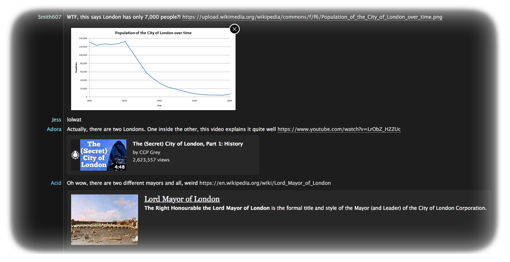

This is an extension for Textual IRC Client that enhances it by adding various meta-information to messages that contain links. It will display tweets, wikipedia articles, youtube video information, and the title and description of every webpage + more!
Install Instructions
- Download the extension by pressing the "Download" button above.
- Unzip the file that has been downloaded and enter the newly created directory.
- Double click "Textual Inline Media.bundle" to install it into Textual.
- Restart Textual
Supported Versions
You require Textual IRC Client 5.2.2 and above, running on OS X 10.10.4 Yosemite and above to run this extension. The App Store version is not supported.

This extension is currently in beta. I take no responsibility for crashes or instability resulting from using this extension, however I encourage anyone to report issues they encounter in the issue tracker.